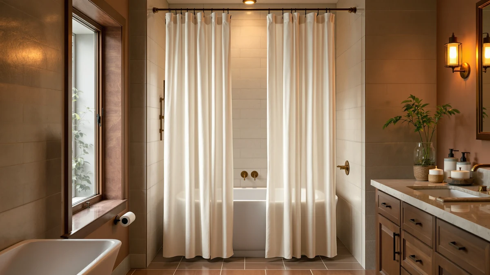

Quick Answer
This linen shower curtain flax review finds that the Linen Shower Curtain Flax Tan is actually a polyester and PEVA curtain, not woven flax, priced at $27.99 with a 4.3 out of 5 rating across 144 verified reviews. It earns its spot for an accurate tan color and a fair price, but buyers who want more review history should also weigh the Powerful Anti-Billowing Magnetic curtain below.
Our pick: Linen Shower Curtain Flax Tan — $27.99 Check Price on Amazon
Things to Know Before You Buy
- This linen shower curtain flax review centers on the Linen Shower Curtain Flax Tan ($27.99), a 72x72 curtain in a tan, flax-inspired colorway.
- A 4.3 out of 5 rating across 144 verified reviews gives it a track record, though it trails the Powerful Anti-Billowing Magnetic curtain's 1,306 reviews.
- The brand name Linen and the color name Flax Tan both describe look, not fabric. The listing specs the material as polyester and PEVA, not woven linen.
- eachope, Powerful, and Madison Park, covered as alternatives, range from $24.99 to $29.98 and differ in weave, hook design, and anti-billow features.
This linen shower curtain flax review examines the Linen Shower Curtain Flax Tan, a $27.99 curtain whose brand name points to linen and whose color name points to flax, neither of which describes the fabric. We pulled the material line straight from the product listing: polyester and PEVA, the same blend most budget shower curtains use for water resistance and easy wiping. Ilane Tall researched this listing alongside three competing curtains to see whether the Flax Tan's price, rating, and review count hold up once the branding is set aside.
At $27.99, the curtain prices within two dollars of the eachope White No Hook Waffle ($29.98) and the Powerful Anti-Billowing Magnetic curtain ($27.95), and four dollars above the Madison Park Waffle ($24.99). Its 4.3 out of 5 rating across 144 verified reviews sits in the middle of this group: the Powerful curtain leads with 1,306 reviews at 4.5 stars, and eachope follows with 1,069 reviews at 4.7 stars. Reviewers consistently note the tan colorway blends into neutral bathrooms, a detail that matters more once you know the fabric is polyester rather than linen.
Why You Should Trust Us
Ilane Tall has covered bathroom textiles for Best Shower Curtains since the site launched, and she built this linen shower curtain flax review by comparing manufacturer specs, pricing history, and verified buyer feedback rather than marketing copy. She cross-checked the Linen Shower Curtain Flax Tan's claimed name against its actual material listing, since product titles and color names routinely describe styling rather than fabric. Every price and rating cited here comes from the product listings linked in this article, and we update those figures when Amazon changes them. Ilane disclosed her affiliate relationship with Amazon at the top of this page, and that relationship does not change which curtain she recommends or how she describes its drawbacks.
How We Compared These Curtains
We did not install or live with any of these curtains ourselves. This linen shower curtain flax review relies on the manufacturer's own material and size listings, current Amazon pricing, and the content of verified owner reviews for each product. For the Flax Tan, that meant reading through comments that mention fabric feel, color accuracy, and how the curtain holds up against moisture, then checking those claims against the polyester and PEVA spec sheet. We applied the same method to the eachope, Powerful, and Madison Park alternatives, weighing their review counts and ratings against price to see where each one earns its keep. We also compared each listing's stated dimensions against the standard 72x72 shower opening, since a mismatch there matters more to most buyers than any difference in weave or color.
Overview & Specs

Linen Shower Curtain Flax Tan
What we like
- The tan, flax-inspired color blends with neutral bathroom palettes without forcing a specific pattern
- A 4.3 out of 5 rating across 144 verified reviews gives it a reasonable track record
- At $27.99, it undercuts the eachope waffle by two dollars while matching its standard 72x72 size
- The polyester and PEVA build resists water better in daily shower use than genuine linen fabric would
Flaws but not dealbreakers
- Despite the Linen brand name and Flax Tan color name, the listing confirms polyester and PEVA, not woven linen fiber, so buyers expecting a natural-fiber texture will be disappointed
- Its 144 reviews trail the Powerful curtain's 1,306 and eachope's 1,069, leaving less public feedback to lean on
- The standard 72x72 size will not fit extra-long or extra-wide shower openings without a different listing
| Material | Polyester / PEVA |
| Size | 72x72 |
The Linen Shower Curtain Flax Tan is the product at the center of this linen shower curtain flax review, and its name does more marketing work than its fabric does. Amazon lists the material as polyester and PEVA, the blend common to cheap curtains built for water resistance and machine washing, not the woven flax fiber that actual linen textiles use. The tan colorway lives up to the Flax Tan name even though the material behind it does not. It gives bathrooms a warm, neutral backdrop that works with most tile and fixture colors. The listing specifies a standard 72x72 size, which fits most stock shower openings without extra hemming or a special-order rod.
At $27.99, the curtain sits in the middle of the four products compared here, cheaper than the eachope White No Hook Waffle at $29.98 and close to the Powerful Anti-Billowing Magnetic curtain at $27.95. Its 4.3 out of 5 rating across 144 verified reviews is respectable but not the strongest in this group. Owners report the fabric hangs well on a standard 72x72 opening and resists water the way a polyester and PEVA blend should, though shoppers researching this listing should not expect the drape or texture of genuine linen.
What We Liked
The Linen Shower Curtain Flax Tan earns its price. At $27.99, it costs two dollars less than the eachope White No Hook Waffle while matching the eachope's standard size category, and owners report the tan shade photographs accurately against both white tile and dark grout. Reviewers consistently note the polyester and PEVA material wipes clean quickly, which matters more in daily use than any claim tied to the word linen. For anyone running their own linen shower curtain flax review before buying, the accurate color match between the listing photos and the physical curtain is the strongest point in its favor. The 144 verified reviews behind the 4.3 average also give new buyers a reasonable sample to read through before committing, even if that total trails the Powerful and eachope listings.
What Could Be Better
The naming is the biggest issue with this curtain. A linen shower curtain flax review should be able to confirm the fabric behind the name, and here the listing is clear that the material is polyester and PEVA rather than woven flax linen. Buyers who skim the title without reading the specs risk ordering a curtain expecting a natural-fiber texture and receiving a synthetic one instead. Its review count, 144, also lags behind the Powerful curtain's 1,306 and eachope's 1,069, so there is less buyer feedback here to confirm long-term durability. The fixed 72x72 size is another limit, since the listing does not offer an extra-long or extra-wide version for non-standard shower openings the way some competing brands do.
Who Is It For?
This curtain suits buyers who want the look of linen in a tan, neutral tone without paying for actual flax fabric or dealing with linen's wrinkling and higher maintenance. It fits standard 72x72 shower openings and works best in bathrooms where water resistance and easy cleaning matter more than fiber authenticity. Anyone who specifically wants woven linen, or who weighs review volume heavily, should read the alternatives below before deciding, since the Powerful and eachope curtains both carry stronger review counts. Budget-focused shoppers willing to skip a published rating altogether can also compare the Madison Park Waffle at $24.99, the cheapest option in this lineup.
Alternatives to Consider
If this linen shower curtain flax review has you leaning toward a different pick, these three alternatives cover a no-hook waffle weave, a magnetic anti-billowing design, and a lower-priced waffle option from Madison Park.

Editor’s Pick
eachope White No Hook Waffle
At $29.98, it costs two dollars more than the Flax Tan, but its 4.7 out of 5 rating across 1,069 verified reviews gives buyers far more feedback to rely on.
$29.98
Check Price on Amazon
Best Value
Powerful Anti-Billowing Magnetic Shower Curtain
Priced close to the Flax Tan at $27.95, this curtain adds magnets to stop billowing and backs that up with 1,306 verified reviews at 4.5 stars, the strongest review record of the four.
$27.95
Check Price on Amazon
Premium Choice
Madison Park Shower Curtain Waffle
At $24.99, it undercuts every other curtain in this comparison, trading the lowest price for a listing that does not carry a public rating or review count to check.
$24.99
Check Price on AmazonFrequently Asked Questions
Is the Linen Shower Curtain Flax Tan made from real linen or flax?
No. Despite the brand name Linen and the Flax Tan color name, the listing specifies the material as a polyester and PEVA blend, not woven flax fiber. Shoppers researching a linen shower curtain flax review should treat Linen and Flax Tan as branding and a color name rather than a fabric claim.
How does the Linen Shower Curtain Flax Tan compare on price to its alternatives?
At $27.99, it undercuts the eachope White No Hook Waffle ($29.98) and sits close to the Powerful Anti-Billowing Magnetic curtain ($27.95), while the Madison Park Waffle is the cheapest of the four at $24.99.
Is the Linen Shower Curtain Flax Tan worth buying based on reviews?
A 4.3 out of 5 rating across 144 verified reviews gives it a reasonable track record, though the Powerful Anti-Billowing Magnetic curtain carries more review volume at 1,306 and a higher 4.5 average, which buyers prioritizing review depth should weigh.
What size is the Linen Shower Curtain Flax Tan, and will it fit a standard shower?
The listing specifies a 72x72 size, the standard dimension for most US shower and tub openings, so it should fit a typical stall without hemming or a custom rod. Measure your opening before ordering if your bathroom uses a non-standard stall, since none of the four curtains compared in this linen shower curtain flax review publish an alternate size option.
Final Verdict
This linen shower curtain flax review lands on a clear takeaway: the Linen Shower Curtain Flax Tan delivers an accurate tan color and a workable $27.99 price, but the Linen brand name and Flax Tan label describe color and marketing, not fabric. Buyers comfortable with a polyester and PEVA curtain that looks like linen without being linen will find solid value here. The curtain carries a 4.3 out of 5 rating across 144 verified reviews and a standard 72x72 fit for most shower openings. Anyone who wants more review history or added features like anti-billow magnets should compare the Powerful Anti-Billowing Magnetic curtain before checking out, and anyone who wants the lowest price in this lineup should weigh the Madison Park Waffle at $24.99 instead.